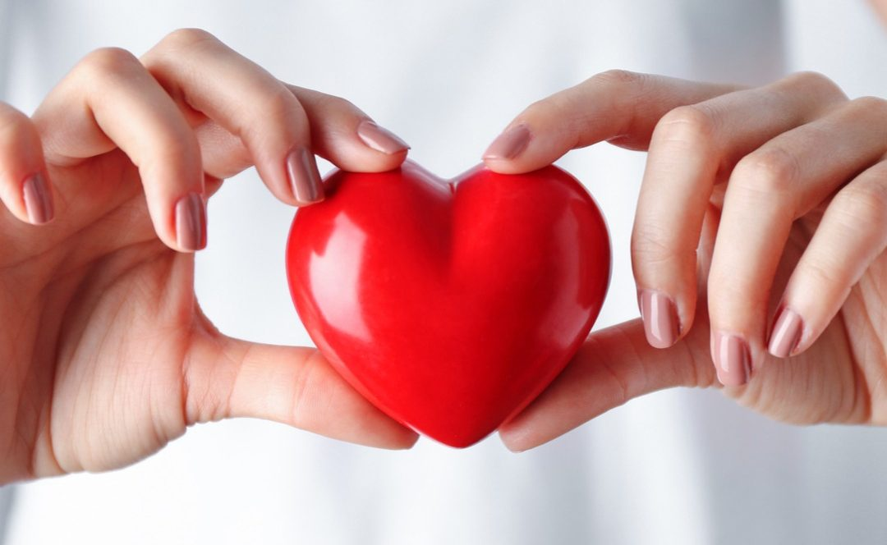
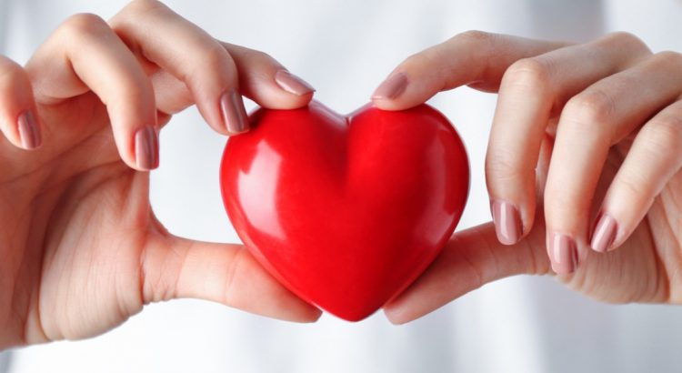
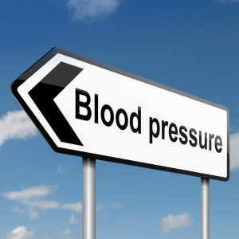
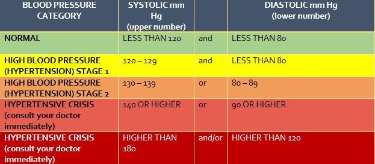
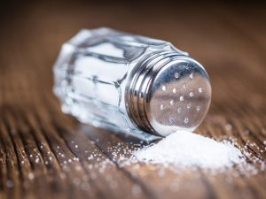
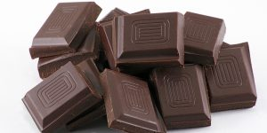

What Causes High Blood Pressure and What Can You Do to Avoid it Happening to You?

The next time you are waiting in line at the Department of Motor Vehicles, look around.The probability is good that one-in-three people, sitting, standing, taking a number or complaining at customer service, suffer from high blood pressure.According to the Centers for Disease Control and Prevention (CDC), a shocking 75 million adults in the United States currently tangle with one of the two types of the disease.The condition has held an unpleasant place of first, on the list of top five diseases that lead to death in the U.S. annually.
What is blood pressure?
The heart has a vital but simple function.It is a muscle, that pumps blood around the body.It has one job, but does it very well.The reason for all of that pumping is to push blood with low oxygen levels toward the lungs, which replenishes the blood’s oxygen supplies.When the heart constricts to create the force to push the blood, that’s the systolic number, or the first number recorded when the nurse or doctor takes your blood pressure.Diastolic, is the second number logged, and the amount of pressure in the arteries when the heart relaxes before the next beat.
The heart then pumps the newly oxygen-rich blood around the body to supply the muscles and cells.All this pumping action creates pressure on the vessels.It is this pressure that is gauged when a sphygmomanometer, or an inflatable cuff on the upper arm, is used as part of a regular office health check.
Some pressure is good, and necessary.But according to an article on high blood pressure from Harvard University Medical School, too much of a good thing is usually a bad thing.
Two types of high blood pressure
Secondary Hypertension high blood pressure is a growing problem in the U.S., and largely due to poor food choices, stress and lack of exercise.Secondary Hypertension is when there is a known reason for the higher levels of pressure on the blood vessels and arteries.Things that can cause Secondary Hypertension usually include: diet, medicine, lifestyle, age, and genetics.
Conversely, Primary Hypertension or Essential Hypertension, as it’s more commonly known, make up the bulk of the cases, between 90 and 95% annually.According to Hendrick Medical Center, Primary Hypertension tends to develop gradually over many years, whereas Secondary Hypertension often comes on quickly.
Life choices impact blood pressure
If we inherit a disease, or the propensity for a disease, our best defense is to live well, eat well, exercise and monitor the possibility of the problem rearing its head in our life-time.Ironically, the same formula applies for those who are born with no underlying condition, and if high blood pressure is sustained, it largely comes down to poor choices.
Foods that are high in saturated fats, high salt and sugars, alcohol, caffeine and a sedentary lifestyle can all translate into obesity and the growth of plaque on the walls of the arteries.Once plaque builds up, the arteries become tense, constricted, or rigid, and are more resistant.This records as higher blood pressure, and makes it harder for the heart to do its job.Think of a garden hose, and how pliable the rubber is during the summer months.Come winter, that same hose becomes stiff and difficult to manipulate, and pretty much stays in the ‘O’ shape when it’s removed from the wall mount.
That’s what happens to your arteries as plaque builds inside them, unfortunately, and unlike the garden hose, the Spring thaw doesn’t bring back flexibility to the arteries, and overtime, they just get more unyielding.Remembering the heart has one job to do, when conditions are more difficult, it’s less likely it can perform its task well, or at all.
Additionally, the relentless pounding of blood against the walls of the arteries causes them to become harder and narrower, potentially setting the stage for a heart attack or stroke.Without treatment, high blood pressure, or hypertension, can lead to grave health conditions, including heart failure, vision loss, stroke, and kidney disease.
How can I avoid high blood pressure?
Avoiding high blood pressure means taking care of your heart by looking after the well-being of your overall body, mind and spirit.Supporting heart health means strengthening the muscle with exercise.Just as exercise fortifies other muscles in your body, it also helps the heart work more efficient, making it better able to pump blood, and when the supporting organs in the body are functioning as they should, the heart has an easier job to do.This means that the heart pushes out more blood with each beat, allowing it to beat slower and keep your blood pressure under control.
It’s much easier to maintain your blood pressure when it’s normal, than it is to fix high blood pressure after it has taken hold.So, the best time to think about it, is when you don’t have it.
In addition to keeping fit, there are a number of common-sense rules to follow.Here are the top ten guidelines you should be mindful of to keep blood pressure at bay, and smooth your way to a happier, healthier heart.
1.Reduce your sodium intake
The FDA and other health authorities recommend limiting salt intake to between 1.5 and 2.3 grams of sodium per day, or 2,300 mg, which is equal to about 1 teaspoon.Yet, increasing evidence suggests that these guidelines may be too low.People with high blood pressure should not exceed 7 grams per day.Source, FDA
2.Drink less alcohol
Drinking too much alcohol can raise blood pressure to unhealthy levels.Having more than three drinks in one sitting temporarily increases your blood pressure, but repeated binge drinking can lead to long-term increases.Source, Mayo Clinic
3.Eat more potassium-rich foods
Potassium is a key mineral that the body relies on heavily to function properly.It helps to lower blood pressure by balancing out the negative effects of salt.Your kidneys help to control your blood pressure by controlling the amount of fluid stored in your body.The more fluid, the higher your blood pressure.Source, Blood Pressure UK
4.Cut back on caffeine
Caffeine can cause a short, but dramatic increase in your blood pressure, even if you don’t have high blood pressure.Some researchers believe that caffeine blocks a hormone that helps keep your arteries widened.Source, Mayo Clinic
5.Learn to manage stress
Your body produces a surge of hormones when you’re in a stressful situation.These hormones temporarily increase your blood pressure by causing your heart to beat faster and your blood vessels to narrow.Source, Mayo Clinic
6.Eat dark chocolate or raw cocoa
24 chocolate studies involving 1,106 people found that dark chocolate, the kind that contains at least 50 to 70 percent cocoa, lowered blood pressure in all participants, but most notably in those with hypertension.… Dark chocolate also appears to affect cholesterol.Source, AARP
7.Lose weight
Being overweight or obese increases your risk of developing high blood pressure.In fact, your blood pressure rises as your body weight increases.Losing even 10 pounds can lower your blood pressure—and losing weight has the biggest effect on those who are overweight and already have hypertension.Source, National, Heart, Lung and Blood Institute
8.Herbal supplements
There are many different herbs that have been verified to reduce BP.One, Hawthorne Berry, in particular has, again and again, via pharmacological and clinical trials, been shown to effectively lower BP.The two main substances that contribute to Hawthorn’s beneficial effects on the heart are flavonoids and oligomeric procyanidins, which are potent antioxidant agents.Source, Role of natural herbs in the treatment of hypertension, Nahida Tabassum and Feroz Ahmad
9.Quit smoking
The nicotine in cigarette smoke is a big part of the problem.It raises your blood pressure and heart rate, narrows your arteries and hardens their walls, and makes your blood more likely to clot.It stresses your heart and sets you up for a heart attack or stroke.Source, WebMD
10.Meditate
Meditation techniques are increasingly popular practices that may be useful in preventing or reducing elevated blood pressure.Transcendental meditation and mindfulness-based stress reduction may produce clinically significant reductions in systolic and diastolic blood pressure.Source, National, Heart, Lung and Blood Institute
Sources: Keiser Permanente Health Services, Mayo Clinic, National Institute of health, Harvard University Medical School
[bsa_pro_ad_space id=4]
Share on Facebook Tweet Follow us
Posted On: 2019-08-03T00:00:00
Posted By: Lynda Bateman








Content Date: 2019-08-03
Download Date: 2021-07-09
Document ID: L0C04DXXL